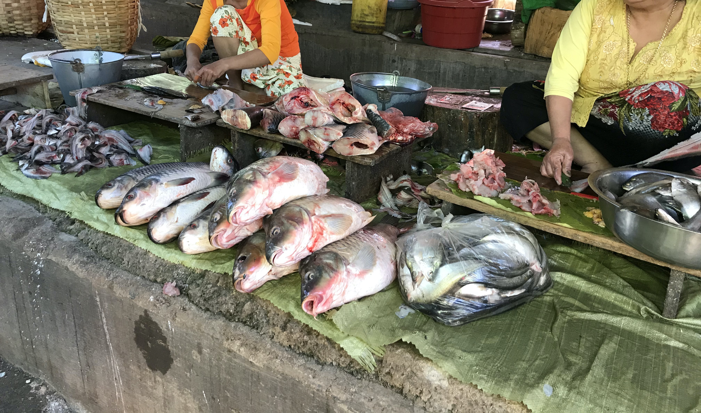

ミャンマーの寺院
ミャンマーの人々にとって仏教はごく身近な存在で、日常的にパゴダ(寺院)にお参りをして祈りを捧げます。
ローカルの人にとって寺院はとても神聖な場所なので、参詣の際にはルールやマナーを守ってお参りしましょう。
参詣時の注意点として、服装は裸足が原則です。また、肌の露出は極力避けるようにしましょう。
パゴダ

祈りを捧げる人々

ミャンマーの食事
シャンヌードル
シャンヌードルとはミャンマー東部のシャン州の麺料理で、鶏がらスープに米粉で作られた麺を入れたものです。
現地の言葉では「シャンカウスエ」と呼ぶそうです。店によって違いますが、具はポークかチキンが多かったです。
こちらはがっつりパクチーが入っていました。(筆者はパクチーが苦手です…)
Steamed black rice(左)とBlack Shan rice with pork(右)
この2つはエスニックフェスティバルで食べました。ヤンゴンでは珍しいらしいので食べることが出来て良かったです。
Steamed black riceはあっさりしていて健康的な味でした。Black Shan rice with porkはニンニクが効いていてとてもパンチがありました。
チャーハンに少し似ているかもしれませんね。ちなみに下に敷いてあるのはバナナの葉だそうです。
ミャンマーの交通事情
ミャンマーに来てまず驚いたことがタクシーの多さでした。日本とは比にならないくらい走ってます。
ちょうどこの日はエスニック・フェスティバルが開かれていて、大渋滞でした。
路線バスもありますが、ミャンマーではタクシー移動がポピュラーのようです。
ミャンマーのマーケット
マーケットは多くの人で賑わっていました。商人の方はとてもフレンドリーで、私たちにもたくさん試食させてくれました。
野菜から魚まで色とりどりの食材が所狭しと並んでいたのが印象的でした。現地の人は辛いものを好むようで、唐辛子が山積みに売られていました。
コーラなどの清涼飲料水ももちろん売っていますが、賞味期限をよく確認しないと痛い目に遭うのでご注意を…
野菜

魚
鶏肉
唐辛子
ミャンマーの伝統的衣装
ロンジー
ミャンマーの民族衣装にはロンジーと呼ばれるロングスカートのような履物があり、男性用を「パソー」、女性用を「タメイン」と呼んでいます。
様々な色が売られていますが、民族や職業によって色が異なるためです。式典や特別な行事では高価な絹織りのロンジーが着用されます。
一年中暖かいミャンマーは、地域によっては35度を超える時期もあるため、木綿が使われ、風通しの良いロンジーなら快適に過ごせます。
筆者も2着購入しました。ショッピングセンターやマーケットなどで安く購入することができるので、訪れた際にはぜひ履いてみてくださいね。

終わりに
いかがでしたでしょうか？少しでもミャンマーに興味を持っていただけていたら嬉しいです！ミャンマーの方はみんな優しくて、フレンドリーな方が多いので、ぜひ一度行ってみてください！
ご覧いただきありがとうございました！またどこかでお会いしましょう！